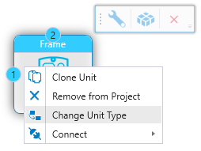
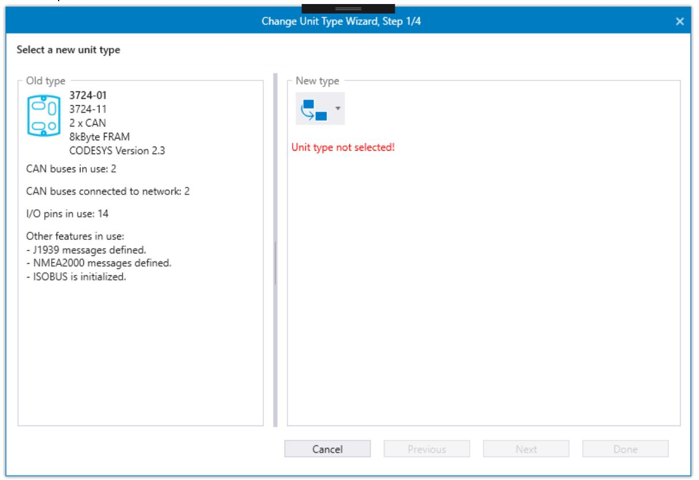
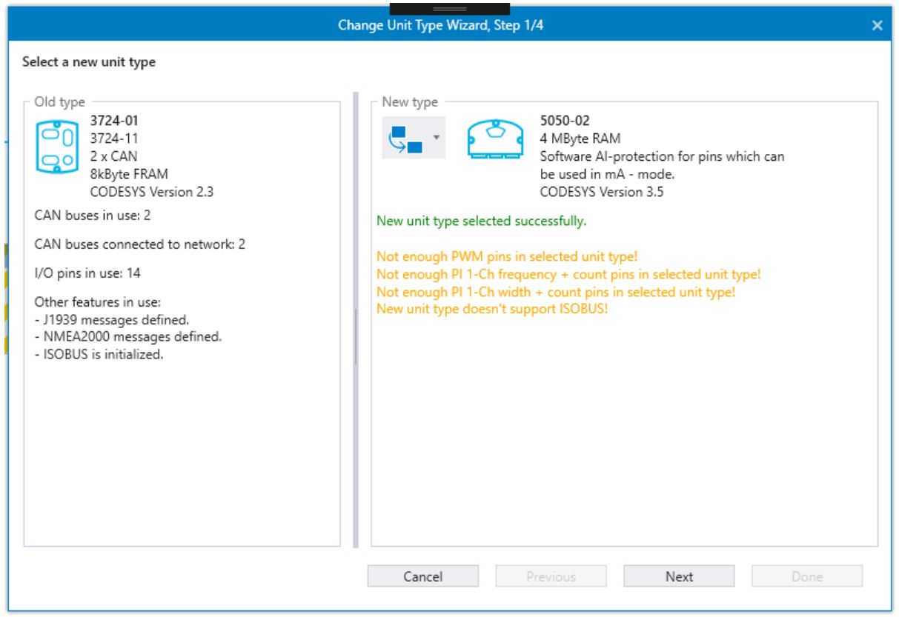
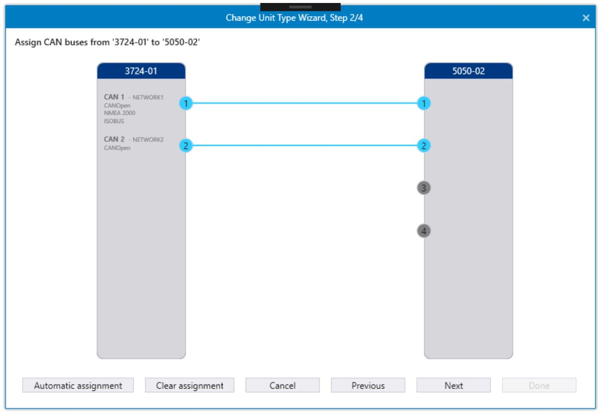
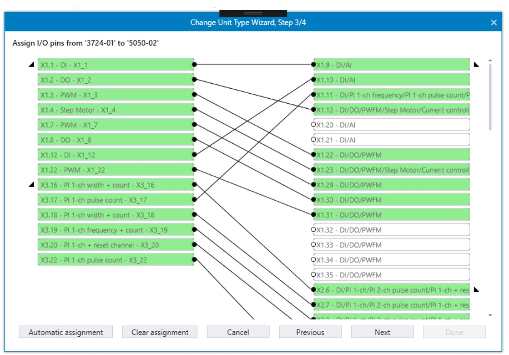
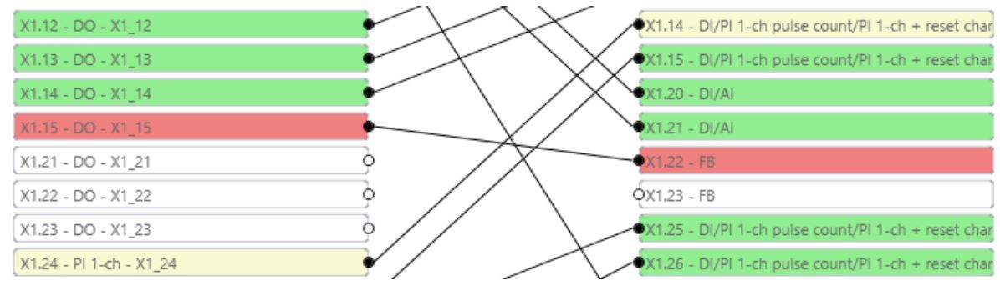
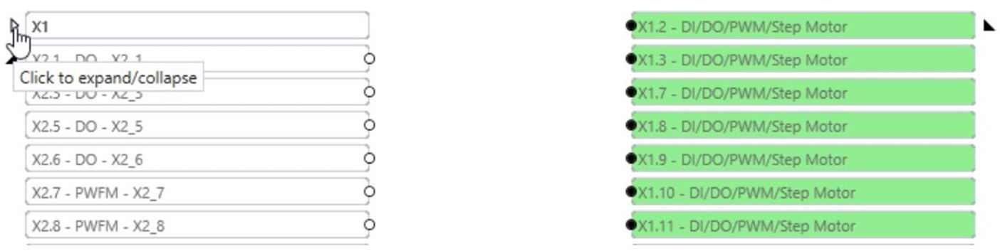
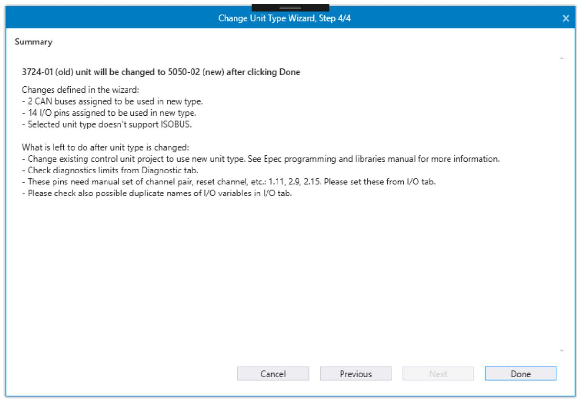
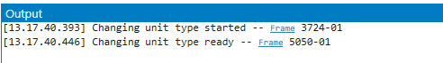

This topic describes how to change the unit type.
First, go to the Network Editor. To start Change Unit Type Wizard, right-click the unit to be changed and select Change Unit Type. Change Unit Type Wizard, Step 1/4 dialog opens.

This selection is not possible for slave units or J1939 units.
To change the unit type starts from the wizard step 1. This dialog is divided to two groups:
Old type: shows the unit to be changed. The unit details and features currently in use are listed.
New type: the target unit type is selected from the menu. The new type must be selected in able to continue to the next step of the wizard.

When the new type is selected:
Image of the selected unit is shown with some basic information
Green text “New unit type selected successfully.” is shown
Yellow warning text informs of any limitations the new type could have. For example, yellow text stating Not enough PWM pins in selected unit type! is a warning that some of the pin settings might be lost after the type is changed.
Next button is enabled.

Proceed to wizard step 2 by selecting Next.
In step 2, CAN buses from the old unit can be assigned to the new unit. For example, if CAN 1 from the old unit is assigned to CAN 2 in the new unit, CAN 2 in the new unit is connected to the same networks and has the same protocols as CAN 1 in the old unit.
The old unit shows information about what netwok the CAN is connected to and what protocols are in use.
When step 2 opens, CAN buses are automatically assigned to best possible CANs in new unit type. Connection lines can be removed by selecting Clear assignment. By selecting Automatic assignment connections are automatically made.
If there are no assignments between CAN nodes, all the CAN settings from the old type are lost.

There are two other ways to create assignments between the old unit and new unit CAN buses:
Select one of the CAN nodes from the old or new unit, then select the CAN node from the other unit.
Drag and drop from one CAN node to another.
Existing connections can be removed by three different ways:
Press the right button of the mouse just over the connection line to open the context menu and select Unassign CAN bus.
Select the connection line by selecting it and then Delete. Several lines can be selected using Shift or Ctrl.
Select Clear assignment to remove all connection lines at once.
Proceed to wizard step 3 by selecting Next. To return to the previous page, select Previous.
Step 3 allows the assignments of I/O pins. For example, if there is an assignment between pins, after changing the type, new unit I/O pin will have the same settings as the old pin had (mode in use, variable name and comment is copied, etc.).
When step 3 is opened and the old type and new type have the same functional version, I/O pins are automatically assigned. Assignments can be done by selecting Automatic assignment. Connection lines are removed by selecting Clear assingment.

There are three kind of connections that the wizard recognizes between I/O pins:
Green: pins are fully compatible.
Yellow: pins are partly compatible. Some to the setting may not be copied to new type.
Red: pins are not compatible. Settings are not copied. For example, in the following picture, the new type pin X1.22 FB will be not used andthe old unit X1.15 – DO pin settings will be lost.

There are two other ways to create assignments between old units and new unit I/O pins:
Select one of the I/O pins from the old type or new type. Then select the I/O pin from the other type.
Drag and drop from I/O pin to another. Dropping is possible also to the pin that is out of the dialog when dragging starts. When moving mouse cursor to the edge of the I/O pin area, the view is scrolling.
Existing connections can be removed by three different ways.
Press the right button of the mouse just over the connection line to open context menu and select Unassign IO connection.
Select connection line by selecting it and then Delete. Several lines can be selected using Shift or Ctrl. Selections can be removed by selecting Esc.
Select Clear assignment to remove all connection lines at once.
Connectors can be expanded/collapsed by selecting the black triangle. When the connector is collapsed it's pins and connection lines are hidden.

Step 4 is a summary page of the wizard. It provides an overview of what changes were defined in the wizard and what is left to do after the unit type is changed.
The summary page text can be copied to the clipboard by pressing the right mouse button over the text and selecting Copy to clipboard.

Close Wizard by selecting Done. After this, the old unit does not exist in the MultiTool Creator project. A successful change can be read from the output.

Epec Programming & Libraries Manual > Programming > How to change unit type